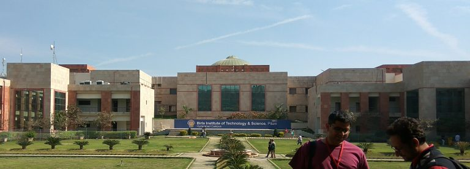
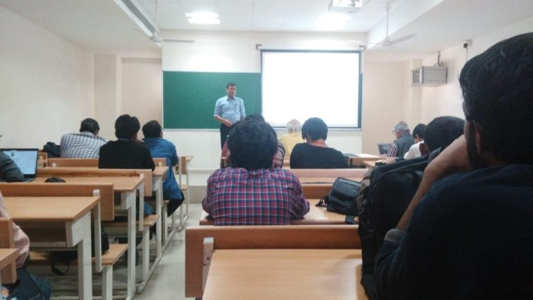
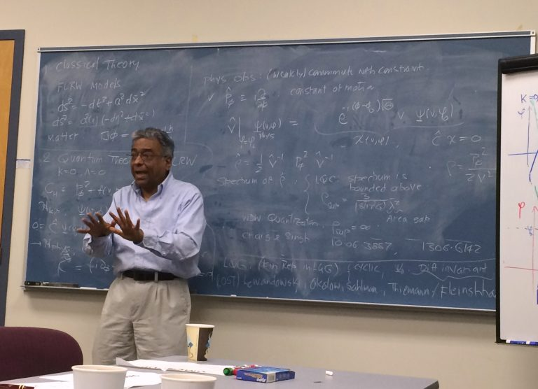

IAGRG30 - India’s Biennial Gravity Meetup
I was recently in BITS Hyderabad 1 attending the 30th meeting of the Indian Association for General Relativity and Gravitation (IAGRG30). I was pleasantly surprised that my abstract (Vaid 2017) was selected for a talk and that too for the very first talk on the first day of the “Quantum Gravity” parallel session. Of course, it was the same talk which I presented last month at IIT-Madras 2 (and about which I wrote in a separate blog post), so material wise there was nothing new there. Though this time the audience included some experts in gravitational physics such as Amitabh Virmani, Naresh Dhadhich and another distinguished professor who I later found out was Prof Hari Dass. A while back Dass co-authored a very nice paper (Dass and Mathur 2007) on using the Schwinger boson representation to represent the state space of Loop Quantum Gravity. He also gave the P. C. Vaidya Centenary Lecture, which I think was one of the best talks at the conference.
Over Confidence Is Not Good
I don’t think my presentation went quite as smooth as last month’s talk during DAE-HEP 2018 in IIT Madras. I don’t know what unnerved me. Perhaps it was the stern look of intellectual rigor on Naresh Dhadhich’s face. Or maybe it was Amitabh Virmani pointing out an elementary error 3 in one of my statements at the very beginning. It might have been the chicken masala I had at lunch 4. It could have been all the latecomers coming into the room and making a lot of noise as they did so. My talk was the first one of the parallel session and thus also the first talk after lunch. Since the morning session ran late, lunch was late and consequently the afternoon session started late.

My mistake was in being a little too casual about this talk. The one in IITM had gone quite well and I guess I was still riding high on that feeling. Anyways, let this be a lesson that one should never take any talks or presentations lightly. Life bowls you a googly when you least expect it.
Celebrity Sighting
On the second day of the conference most of us were surprised by the unexpected presence of a celebrity - a physics celebrity, that is - amongst us. It happened during one of the morning talks. I was sitting, working on my laptop, not really paying attention to the talk when my ears perked up. Someone sitting near the front of the auditorium had asked the speaker a question during the talk. I instantly recognized that voice. “Could it really be him”, I thought to myself? All I could see was the back of his head, but the tilt of his neck, the choice of his seat in the auditorium and his curly head of hair were enough to identify the man as Abhay Ashtekar. He is a celebrity - at least in the field of gravitational physics, and also beyond - for very good reason. Very few scientists can claim to have single-handedly started an entirely new branch in their field, let alone a branch which went on to redefine the entire field itself. Some thirty-two years ago, Ashtekar published his now famous papers (Ashtekar 1986, 1987) which triggered the creation of Loop Quantum Gravity (LQG). Since that time LQG has gradually grown to become, at present, the strongest competitor to String Theory as a candidate theory of quantum gravity.

At the end of that morning session I mustered up the courage to go upto him. I waited dutifully as he got done speaking to someone and then I stepped up to and said “it is very nice to see you again” or words to that effect. He gave me a pleasant smile, shook my hand and said “nice to see you too”. Though, I doubt if he even remembers me.
A Bit of Pre-History
I have known Abhay 5 since my time as a graduate student in Penn State. In fact I went to Penn State with the ostensible goal of working on LQG as his student. I remember at the end of my first semester he asked me to come and meet him. I went to his office. He was looking at my grades and I remember him saying to me: “How can someone who got a B in Quantum Mechanics expect to work in Quantum Gravity? These are things you should be able to do in your sleep”. Since then I have made every effort to do quantum mechanics in my sleep. I’m not sure to what extent I have succeeded. I even did a summer project under him working on the geometrical formulation of quantum mechanics (Ashtekar and Schilling 1999; Schilling 1996). At the end of that summer I went to his office to show him what I understood about Schilling’s work. I took a piece of chalk and started drawing a sphere - to represent the state space of a quantum mechanical system - on which I was then going to draw a distribution which would represent a quantum state 6. Before, I could finish drawing the sphere he interrupted me and shaking his head, said “no, no, I can’t work in this way”. I think the message was pretty clear and I took my leave. A few days later I received an email from him formally ending any hopes I had of working with him. At that time it wasn’t the greatest feeling in the world. With time, however, I have realized that it was probably for the best. Abhay was right. We weren’t, as he said, “compatible”. In fact, he would have done both, him and me, a disservice by taking me on as a student. There has to be some match between a guide-to-be’s and a student-to-be’s methodology and research philosophy. The biggest mistake a guide-to-be can make is to take on a student knowing full well that their respective approaches towards conducting scientific research are not compatible. Like any forced relationship, such a forced setup will ultimately end in misery for all concerned. Though I did not end up as his student, I had already had the privilege of attending his course on “Advanced General Relativity”. Abhay offered the course once maybe every five or ten years. It turned out that my decision to jam pack my first semester in graduate school with general relativity in addition to the usual course-load for first year students was serendipitous, because it was the very next semester that Abhay offered his advanced general relativity course. Boy, was I in for a treat. Abhay is probably one of the most accomplished teachers I have ever met. His meticulous approach to each class, the precision of his statements, the obvious excitement that he felt doing and teaching the subject, not to mention his elegant blackboard calligraphy - which I try to emulate even to this day - were all qualities which ensured that I tried to attend every lecture. Those who knew me in college knew that attending classes was never my forte! Much more could be said about Abhay - the man and his work, but I will leave it here with one more reminiscence. Once he gathered up a group of us who were attending his advanced GR course and aspired to work in quantum gravity. He sat down and told us what it takes to work in this field. He said one has to have “fire in the belly” to get anywhere in this field. At that time it seemed that the fire in my belly was little more than smoldering embers. Over time I have realized that the fire (in my belly) was always burning even though I might not have known about it.
Kepler meets Maldacena
On the second day there was a plenary talk by R. Loganayagam from ICTS, Bengaluru. Loganayagam - or “Loga” for those who can’t wrap their tongues around his full last name - has had a stellar career so far working in AdS/CFT and quantum gravity. You know that a speaker is a star - or, at the very least, a rising star - when all the conference attendees are asked to leave the spacious auditorium and cram themselves in classroom which can hold at most 60% of those present, because the speaker decided to give a blackboard or “chalk talk”, rather than making slides for his presentation! Loga’s talk was about the Kepler, or two body problem, in gravitation. The solution of the two-body problem was the greatest triumph of Newton’s mechanics. Using the calculus of “fluxons” he invented for this very purpose, Newton gave a complete analytical solution to the problem of two bodies moving under the influence of each other’s mutual gravitational attraction. In the process, his solution provided a mathematical explanation for Kepler’s Three Laws of planetary motion. These are the following:
- The path of planet in orbit around the Sun traces out an ellipse. The Sun is located at one of the two foci of this ellipse.
- The line joining the planet with the Sun traces out equal areas in equal times.
- The ratio \((R^3/T^2)\)is the same for the orbit of any planet around the Sun. Here\(T\)is the orbital period and\(R\) is the length of the semi-major axis of the orbital ellipse.
Now this is what I could gather from the talk. Loga wants to embed the Keplerian two-body system in the bulk of an AdS spacetime and then use the methods of AdS/CFT to calculate observables for this system, such as the gravitational binding energy, using CFT techniques in the boundary theory. The reason I find this particularly interesting is because I have tried in the past to apply some ideas from LQG to this very situation. In (Vaid 2016) I argued that the concept of thermal time (see, for e.g. (Haggard and Rovelli 2013)) combined with the quantization of geometric area in LQG naturally leads to Kepler’s second law.
- I know, I know. Its “BITS-Pilani at Hyderabad”. But, BITS really needs to drop the “Pilani” tag from their Hyderabad and Goa campuses. We get it. Pilani was and will always be the mother campus. But it is too tiresome to write “BITS-Pilani Hyderabad” and “BITS-Pilani Goa”. Hence, the author is taking the unilateral decision to drop “Pilani” henceforth in all mentions of the non-Pilani campuses of BITS.
- Speaking of names, isn’t is past time that IIT Madras is renamed to IIT Chennai to reflect the fact that its host city was renamed from Madras to Chennai a long time ago?
- While speaking of the AdS/CFT correspondence I said that anti-de Sitter (the full-form of “AdS”, though I don’t know why we don’t write it as “adS” instead) was a compact space. Virmani instantly pointed out that AdS was not compact as other distinguished attendees nodded their heads in somber agreement.
- Many thanks to the organizers of the event - Rahul Nigam, Sashideept Gutti, and all others. This was an example of how such an event should be organized, as opposed to the other event I recently blogged about, which was a shining example of how a conference should not be organized!
- His friends and colleagues are accustomed to addressing him by his first name “Abhay” - which means “fearless” in Hindi/Marathi - however, I never quite built up the courage to address him in person as anything but “Prof. Ashtekar” or “Sir”. This being a blog of which there is zero likelihood of him ever reading, I will throw caution to the wind and follow the common practice.
- I didn’t know at the time, but the appropriate tool I was looking for was known as the density matrix formulation of quantum mechanics.